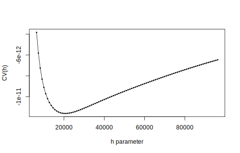
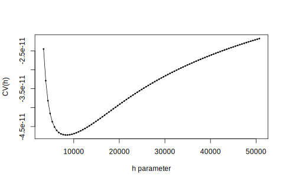
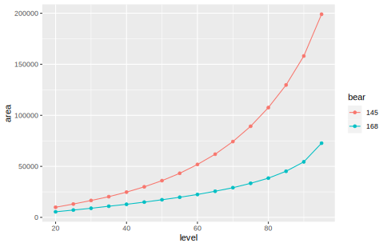
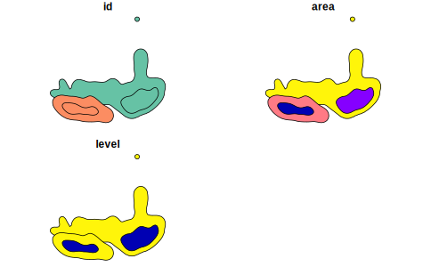
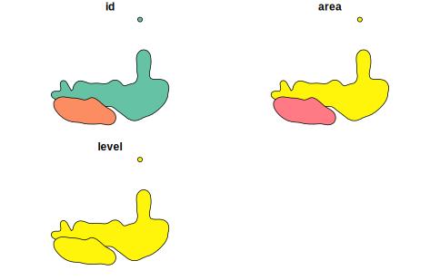

remote <- "https://alaska.usgs.gov/data/polarBear/polarBear_satelliteTelemetry_distribution_HabitatSelection_beaufortChukchi_1985_2016/polarBear_satelliteTelemetry_distribution_HabitatSelection_beaufortChukchi_1985_2016.zip"
local <- tempfile()
download.file(remote,local,mode="wb")
list1 <- unzip(local,exdir=tempdir())
fname <- list1[grep("kernelUD",basename(list1))]
file.remove(list1)
Подготовка данных
Loading required package: sf
Linking to GEOS 3.9.1, GDAL 3.2.1, PROJ 7.2.1; sf_use_s2() is TRUE
Loading required package: ggplot2
Loading required package: adehabitatHR
Loading required package: sp
Loading required package: deldir
deldir 1.0-6 Nickname: "Mendacious Cosmonaut"
The syntax of deldir() has had an important change.
The arguments have been re-ordered (the first three
are now "x, y, z") and some arguments have been
eliminated. The handling of the z ("tags")
argument has been improved.
The "dummy points" facility has been removed.
This facility was a historical artefact, was really
of no use to anyone, and had hung around much too
long. Since there are no longer any "dummy points",
the structure of the value returned by deldir() has
changed slightly. The arguments of plot.deldir()
have been adjusted accordingly; e.g. the character
string "wpoints" ("which points") has been
replaced by the logical scalar "showpoints".
The user should consult the help files.
Loading required package: ade4
Loading required package: adehabitatMA
Registered S3 methods overwritten by 'adehabitatMA':
method from
print.SpatialPixelsDataFrame sp
print.SpatialPixels sp
Loading required package: adehabitatLT
Loading required package: CircStats
Loading required package: MASS
Loading required package: boot
src <- read.csv(fname)
tail(src)
BearID_ud DateTimeUTC_ud latitude_ud longitude_ud season period
21613 255 5/23/2010 21:49 70.981 -146.952 max 716
21614 255 5/27/2010 18:12 70.992 -146.340 max 716
21615 255 5/30/2010 18:41 70.815 -145.721 max 716
21616 255 6/2/2010 20:09 70.689 -143.814 max 716
21617 255 6/5/2010 20:12 71.729 -146.236 max 716
21618 255 6/8/2010 21:11 72.548 -145.328 max 716
src$period <- sprintf("%04d",src$period)
src$group <- paste0(src$season,":",src$period)
tail(src)
BearID_ud DateTimeUTC_ud latitude_ud longitude_ud season period group
21613 255 5/23/2010 21:49 70.981 -146.952 max 0716 max:0716
21614 255 5/27/2010 18:12 70.992 -146.340 max 0716 max:0716
21615 255 5/30/2010 18:41 70.815 -145.721 max 0716 max:0716
21616 255 6/2/2010 20:09 70.689 -143.814 max 0716 max:0716
21617 255 6/5/2010 20:12 71.729 -146.236 max 0716 max:0716
21618 255 6/8/2010 21:11 72.548 -145.328 max 0716 max:0716
(loc <- sf::st_as_sf(src,coords=c("longitude_ud","latitude_ud"),crs=4326))
Simple feature collection with 21618 features and 5 fields
Geometry type: POINT
Dimension: XY
Bounding box: xmin: -179.967 ymin: 63.8911 xmax: 179.998 ymax: 82.22576
Geodetic CRS: WGS 84
First 10 features:
BearID_ud DateTimeUTC_ud season period group geometry
1 196 5/2/1992 22:00 max 8595 max:8595 POINT (-125.103 73.985)
2 196 5/11/1992 0:43 max 8595 max:8595 POINT (-125.262 74.398)
3 196 5/17/1992 22:19 max 8595 max:8595 POINT (-123.282 74.458)
4 196 5/23/1992 23:27 max 8595 max:8595 POINT (-125.084 73.983)
5 182 5/2/1986 17:57 max 8595 max:8595 POINT (-137.429 69.353)
6 182 5/12/1986 0:46 max 8595 max:8595 POINT (-138.622 69.735)
7 182 5/26/1986 18:51 max 8595 max:8595 POINT (-139.31 69.73)
8 182 6/2/1986 0:19 mlt 8595 mlt:8595 POINT (-139.165 69.839)
9 182 6/7/1986 19:53 mlt 8595 mlt:8595 POINT (-138.242 69.717)
10 182 6/23/1986 0:38 mlt 8595 mlt:8595 POINT (-141.019 69.72)
[1] 4326
Cохранение всех данных в формате ГИС
if (!dir.exists("data"))
dir.create("data")
dst <- "data/locations_for_kernelUD.geojson"
sf::st_write(loc,dsn=dst,delete_layer=file.exists(dst),delete_dsn=file.exists(dst))
loc <- loc[loc$group %in% c("max:0716"),]
ta <- table(loc$BearID_ud)
ta <- ta[ta>150] ## 120
ta
145 168
155 183
loc <- loc[loc$BearID_ud %in% names(ta),]
table(loc$BearID_ud)
145 168
155 183
Сохранение части данных
if (!dir.exists("data"))
dir.create("data")
dst <- "data/locations_for_ltraj.geojson"
sf::st_write(loc,dsn=dst,delete_layer=file.exists(dst),delete_dsn=file.exists(dst))
Участки обитания
Формирование сетки
(loc <- sf::st_transform(loc,3572))
Simple feature collection with 338 features and 5 fields
Geometry type: POINT
Dimension: XY
Bounding box: xmin: -88920.86 ymin: -2211301 xmax: 733452.4 ymax: -1455791
Projected CRS: WGS 84 / North Pole LAEA Alaska
First 10 features:
BearID_ud DateTimeUTC_ud season period group geometry
17462 145 5/14/2008 3:54 max 0716 max:0716 POINT (208385.1 -2172907)
17463 145 5/18/2008 20:14 max 0716 max:0716 POINT (219304.5 -2105274)
17464 145 5/21/2008 21:32 max 0716 max:0716 POINT (199755 -2080243)
17465 145 5/27/2008 18:08 max 0716 max:0716 POINT (183527.7 -2054768)
17466 145 5/30/2008 18:29 max 0716 max:0716 POINT (190180.1 -2042328)
17467 145 6/2/2008 18:37 max 0716 max:0716 POINT (191254.4 -2033488)
17468 145 6/5/2008 20:03 max 0716 max:0716 POINT (144390 -2001121)
17469 145 6/8/2008 20:16 max 0716 max:0716 POINT (142381 -2013417)
17470 145 6/11/2008 21:29 max 0716 max:0716 POINT (104305.1 -2028877)
17471 145 6/17/2008 19:01 max 0716 max:0716 POINT (146107.4 -1997239)
[1] 3572
sf::st_crs(loc)$proj4string
[1] "+proj=laea +lat_0=90 +lon_0=-150 +x_0=0 +y_0=0 +datum=WGS84 +units=m +no_defs"
bbox <- sf::st_bbox(loc)
bbox
xmin ymin xmax ymax
-88920.86 -2211300.60 733452.40 -1455790.58
bbox <- sf::st_as_sfc(bbox) |>
sf::st_buffer(500*1e3) |>
sf::st_bbox()
bbox
xmin ymin xmax ymax
-588920.9 -2711300.6 1233452.4 -955790.6
gr <- sf::st_make_grid(bbox,cellsize=12000,what="centers") #<<
str(gr)
sfc_POINT of length 22344; first list element: 'XY' num [1:2] -582921 -2705301
Formal class 'SpatialPoints' [package "sp"] with 3 slots
..@ coords : num [1:22344, 1:2] -582921 -570921 -558921 -546921 -534921 ...
.. ..- attr(*, "dimnames")=List of 2
.. .. ..$ : NULL
.. .. ..$ : chr [1:2] "coords.x1" "coords.x2"
..@ bbox : num [1:2, 1:2] -582921 -2705301 1229079 -953301
.. ..- attr(*, "dimnames")=List of 2
.. .. ..$ : chr [1:2] "coords.x1" "coords.x2"
.. .. ..$ : chr [1:2] "min" "max"
..@ proj4string:Formal class 'CRS' [package "sp"] with 1 slot
.. .. ..@ projargs: chr "+proj=laea +lat_0=90 +lon_0=-150 +x_0=0 +y_0=0 +datum=WGS84 +units=m +no_defs"
.. .. ..$ comment: chr "| __truncated__"
Построение кёрнел
Пример построения кёрнел с параметром h="LSCV"
ud <- adehabitatHR::kernelUD(sf::as_Spatial(loc["BearID_ud"])
,grid=gr
,h=list("href","LSCV",30000)[[2]]
)
adehabitatHR::plotLSCV(ud[[1]])

adehabitatHR::plotLSCV(ud[[2]])

ud <- adehabitatHR::kernelUD(sf::as_Spatial(loc["BearID_ud"]) #<<
,grid=gr
,h=list("href","LSCV",30000)[[3]]
)
List of 2
$ 145:Formal class 'estUD' [package "adehabitatHR"] with 9 slots
.. ..@ h :List of 2
.. .. ..$ h : num 30000
.. .. ..$ meth: chr "specified"
.. ..@ vol : logi FALSE
.. ..@ data :'data.frame': 22344 obs. of 1 variable:
.. .. ..$ ud: num [1:22344] 0 0 0 0 0 0 0 0 0 0 ...
.. ..@ coords.nrs : num(0)
.. ..@ grid :Formal class 'GridTopology' [package "sp"] with 3 slots
.. .. .. ..@ cellcentre.offset: Named num [1:2] -582921 -2705301
.. .. .. .. ..- attr(*, "names")= chr [1:2] "Var2" "Var1"
.. .. .. ..@ cellsize : Named num [1:2] 12000 12000
.. .. .. .. ..- attr(*, "names")= chr [1:2] "Var2" "Var1"
.. .. .. ..@ cells.dim : Named int [1:2] 152 147
.. .. .. .. ..- attr(*, "names")= chr [1:2] "Var2" "Var1"
.. ..@ grid.index : int [1:22344] 1 153 305 457 609 761 913 1065 1217 1369 ...
.. ..@ coords : num [1:22344, 1:2] -582921 -582921 -582921 -582921 -582921 ...
.. .. ..- attr(*, "dimnames")=List of 2
.. .. .. ..$ : NULL
.. .. .. ..$ : chr [1:2] "Var2" "Var1"
.. ..@ bbox : num [1:2, 1:2] -588921 -2711301 1235079 -947301
.. .. ..- attr(*, "dimnames")=List of 2
.. .. .. ..$ : chr [1:2] "Var2" "Var1"
.. .. .. ..$ : chr [1:2] "min" "max"
.. ..@ proj4string:Formal class 'CRS' [package "sp"] with 1 slot
.. .. .. ..@ projargs: chr "+proj=laea +lat_0=90 +lon_0=-150 +x_0=0 +y_0=0 +datum=WGS84 +units=m +no_defs"
.. .. .. ..$ comment: chr "| __truncated__"
$ 168:Formal class 'estUD' [package "adehabitatHR"] with 9 slots
.. ..@ h :List of 2
.. .. ..$ h : num 30000
.. .. ..$ meth: chr "specified"
.. ..@ vol : logi FALSE
.. ..@ data :'data.frame': 22344 obs. of 1 variable:
.. .. ..$ ud: num [1:22344] 0 0 0 0 0 0 0 0 0 0 ...
.. ..@ coords.nrs : num(0)
.. ..@ grid :Formal class 'GridTopology' [package "sp"] with 3 slots
.. .. .. ..@ cellcentre.offset: Named num [1:2] -582921 -2705301
.. .. .. .. ..- attr(*, "names")= chr [1:2] "Var2" "Var1"
.. .. .. ..@ cellsize : Named num [1:2] 12000 12000
.. .. .. .. ..- attr(*, "names")= chr [1:2] "Var2" "Var1"
.. .. .. ..@ cells.dim : Named int [1:2] 152 147
.. .. .. .. ..- attr(*, "names")= chr [1:2] "Var2" "Var1"
.. ..@ grid.index : int [1:22344] 1 153 305 457 609 761 913 1065 1217 1369 ...
.. ..@ coords : num [1:22344, 1:2] -582921 -582921 -582921 -582921 -582921 ...
.. .. ..- attr(*, "dimnames")=List of 2
.. .. .. ..$ : NULL
.. .. .. ..$ : chr [1:2] "Var2" "Var1"
.. ..@ bbox : num [1:2, 1:2] -588921 -2711301 1235079 -947301
.. .. ..- attr(*, "dimnames")=List of 2
.. .. .. ..$ : chr [1:2] "Var2" "Var1"
.. .. .. ..$ : chr [1:2] "min" "max"
.. ..@ proj4string:Formal class 'CRS' [package "sp"] with 1 slot
.. .. .. ..@ projargs: chr "+proj=laea +lat_0=90 +lon_0=-150 +x_0=0 +y_0=0 +datum=WGS84 +units=m +no_defs"
.. .. .. ..$ comment: chr "| __truncated__"
- attr(*, "class")= chr "estUDm"
Площади по уровням
ka <- adehabitatHR::kernel.area(ud,unin="m",unout="km2") #<<
colnames(ka) <- names(ud)
knitr::kable(rbind(head(ka,4),tail(ka,4)),row.names=TRUE)
| 20 |
9936 |
5472 |
| 25 |
13104 |
7200 |
| 30 |
16560 |
8928 |
| 35 |
20304 |
10944 |
| 80 |
107568 |
38448 |
| 85 |
129744 |
45216 |
| 90 |
158112 |
54432 |
| 95 |
199008 |
72720 |
ta <- reshape(ka,direction="long"
,varying=list(grep("^\\d+",colnames(ka),value=TRUE))
,times=grep("^\\d+",colnames(ka),value=TRUE)
,v.names="area"
,timevar="bear"
,ids=row.names(ka)
,idvar="level"
)
ta$level <- as.numeric(ta$level)
knitr::kable(rbind(head(ta,4),tail(ta,4)),row.names=FALSE)
| 145 |
9936 |
20 |
| 145 |
13104 |
25 |
| 145 |
16560 |
30 |
| 145 |
20304 |
35 |
| 168 |
38448 |
80 |
| 168 |
45216 |
85 |
| 168 |
54432 |
90 |
| 168 |
72720 |
95 |
(p1 <- ggplot(ta,aes(level,area,colour=bear))+geom_line()+geom_point())

Извлечение уровней
levHR <- c(95,50)
hr <- lapply(ud,function(U) {
hr2 <- lapply(levHR,function(L) {
hr3 <- adehabitatHR::getverticeshr(U,percent=L,unin="m",unout="km2")
hr3$level <- L
sf::st_as_sf(hr3)
})
do.call(rbind,hr2)
})
hr <- lapply(names(hr),function(x) {hr[[x]]$id <- x;hr[[x]]})
hr <- do.call(rbind,hr)
Экспорт
if (!dir.exists("data"))
dir.create("data")
dst <- "data/hr.geojson"
sf::st_write(sf::st_transform(hr,4326)
,dsn=dst
,delete_layer=file.exists(dst)
,delete_dsn=file.exists(dst)
)
Simple feature collection with 4 features and 3 fields
Geometry type: GEOMETRY
Dimension: XY
Bounding box: xmin: -109626 ymin: -2254479 xmax: 779252.1 ymax: -1438563
CRS: +proj=laea +lat_0=90 +lon_0=-150 +x_0=0 +y_0=0 +datum=WGS84 +units=m +no_defs
id area level geometry
homerange 145 200163.21 95 MULTIPOLYGON (((-109626 -20...
homerange1 145 35748.68 50 POLYGON ((437079.1 -2107065...
homerange2 168 73098.40 95 POLYGON ((-90920.86 -210402...
homerange11 168 17253.45 50 POLYGON ((-6920.856 -214782...
Визуализация

plot(hr[order(hr$level),])
